A Coach Made With GMax
by Richard Osborne
Chapter 5: Texturing The Body
As I indicated in the preamble I'll be using 1024 * 1024 texture. These have been frowned on before, one objection was that some graphics cards can't handle them. As most people upgrade computer systems this is largely no longer valid. TSM cannot handle large textures, for TSM I've used 512 * 512 textures & used body sides divided on the centreline. If we were texturing one coach 1024 texture might be very wasteful. A 1024 * 1024 file is FOUR times the size of a 512 * 512 file, a coach with 2 512 files is using half the computing power of a coach with 1 1024 file. You could have a far more detailed texture - LNER teak or elaborate lining for example. It's all compromise. If lettering is the consideration think of using transparent panels.
Can I shake another misconception by the neck: MSTS must first uncompress both .ace & .s files as they're called. This particular file is compressed in the MSTS subdirectory & is 711,174 bytes; uncompressed in the project directory it's 4,329,720 bytes. The 2 512 pixel Bulleid files below are 2,499,028 bytes uncompressed. It depends on the amount of information on them, the LNWR files still have loads of white space. I'm going to put texture for two coaches on one file, this has the advantage that ends, bogies & shared parts needn't be duplicated. This is useful when the coaches would run in sets; it would be silly to have a goods brake & a dining coach on one file.
For comparison some texture files from a Bulleid BR coach, here I've used 2 bites of the width with the sides themselves split on the centreline. It actually makes more sense if the join can be hidden - a door for instance. When I started I used one side & reversed the image on the other side, lettering was on panels but the reversed image had the doors with their hinges on the right. This never looked right to me although nobody else has commented so I no longer do this. Useful trick for wagons, though.
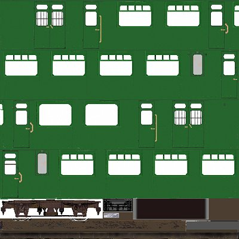
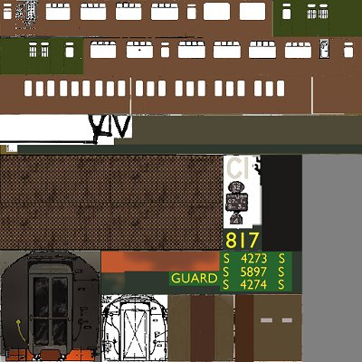
We must have .ace files for Gmax. We use .tga files in the graphics program & must convert them before texturing. This can be a bit of a bore & slows progress a bit. For conversion use MakeAceWin which is on the MSTS update, Dos version MakeAce is tricky & slow. It would be possible to use TgaTools but MakeAceWin is more satisfactory. I use Paint Shop Pro, some of the instructions will differ for other programs, the principle is the same. As usual save the project after every major change or about 5 minutes in any case, losing work hurts! Set autosave in your graphics program as a precaution.
Start by trimming your original plans & making a composite. Make a new file 1024 * 1024, title & save it in your program directory as a .tga, it should be 24 bits, uncompressed. PSP uses ctrl - c, ctrl - v, ctrl - e for pasting. Texturing is where your $25 for the clipboard program earns its keep. The first coach is the 1st Class Brake, the top two sides; the next two are for a 1st/3rd composite. By the time we've made the first coach you'll see how easy it is to make the second.
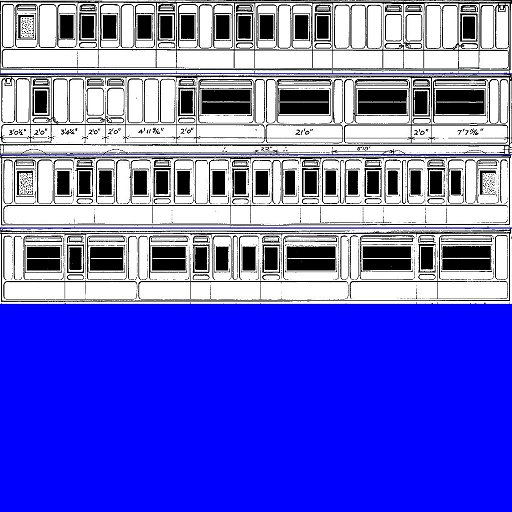
I started this project by having the sides the full width. It's pretty obvious that they're too big, I don't like the idea of distorting the major textures so I made them smaller. This gave space for the roof to the right of the sides. Below I have space for the other things I know, from experience, I'll need - bogie, truss, seats, ends & bulkheads. The insides here are distorted & smaller, you won't see the insides in much detail unless your viewpoint in MSTS is from the station platform.
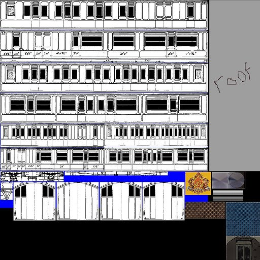
I've forgotten the corridor panel, note the size of the LNWR emblem compared to the size of the sides, these & the numbers will be placed on transparent panels. I've changed the windows from black to light grey. Not long into texturing I realised I should have left space above the corridors. The ends & bulkheads could be smaller - the same height as the sides. Texturing is a dynamic process! It's easiest to alter those parts which don't have transparencies. It's difficult to move the alpha channel in PSP. I'm only going to take this tutorial as far as demonstrating principles - I won't be final texturing.
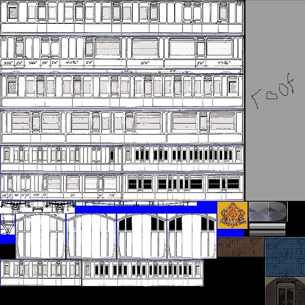
Gmax is very powerful when handling texture, fortunately the program can do most of the sorting. It's easier than the .doc file suggests. I've found you can texture most stock with 3 states; solid for ends, roof, bufferbeams etc; windows for sides, inside where the glass is not completely transparent; trans for parts which use completely transparent textures, bogies, truss, emblems. All of these use the same texture file, the settings change. The transparency is drawn on the .tga file before conversion. We'll put the texture on the coach first.
I'll be using the same technique that I used for the TSM loco. I was very annoyed to see someone who shall remain nameless claim credit for this technique on a train-sim forum; the same person had already claimed to have invented working in TSM point mode a month after I'd sent him a long email on the subject. I'd published the technique about 3 years earlier on a flightsim site; almost certainly I'd used something similar on another program - there's nothing new! Rant over.
We'll use MakeAceWin now, our .tga file has enough information to make a start. MakeAceWin can have an icon on the desktop; start it. It's straightforward enough, browse for the input file. Output file will go to the same directory but will, of course, be empty; write in the file name. You don't at the moment want compression - we'll use it for the MSTS directory. Tick the 'Create Bitmap' window, if you don't the program will only accept 512 or smaller textures. The 'Clamp width' & 'Clamp Height' windows are no longer greyed out, write 1024 in both then press 'Convert'. A window will appear & confirm conversion. Subsequent use of MakeAceWin is similar, the output file now exists & can be picked directly. The 'Clamp' windows must be written; the first screen will say "File already exists...." press "Yes".
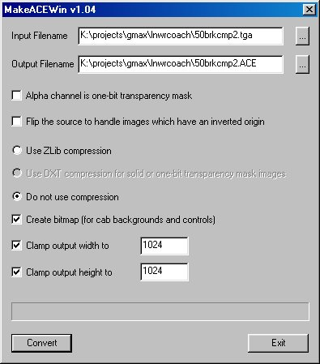
Start with the solid texture. On the 'Material Editor', 'New' name it 'solid' (name could be anything but Gmax insists on unique names for each texture state). 'Open' asks for .ace files. You'll have a preview of the file. Make the mip level -3 ( for an explanation of mip levels go to http://christrains.com/faq.html )
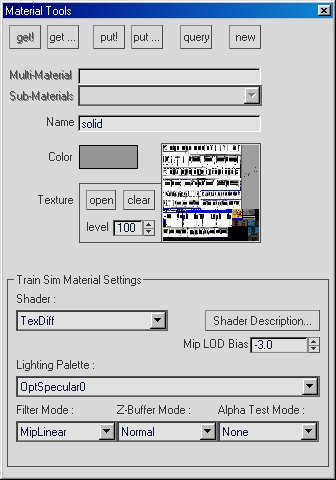
Make the outer body active, 'polygon' mode, make the non-brake end active. You could split the ends from the sides if you wish. Press 'Put!', as before use the UVW tools to position the texture - you want the end without the windows. Make 'main' active & texture the sides. This time we only use part of the texture, 'Fit' is no longer appropriate. My trick is to use the same value in the 'Parameter' windows - here I've used 15m. Even if, on the 'Edit' screen, these are too big they'll be in proportion. You can use the 'Uniform Scale' tool to make them fit. 'Move' & 'Scale' have drop down menus which allow both to be locked in one direction, experiment with this screen & get to know it.So far these are the only parts which require this texture.
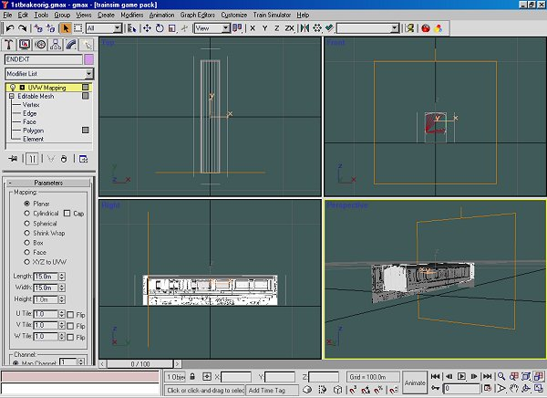
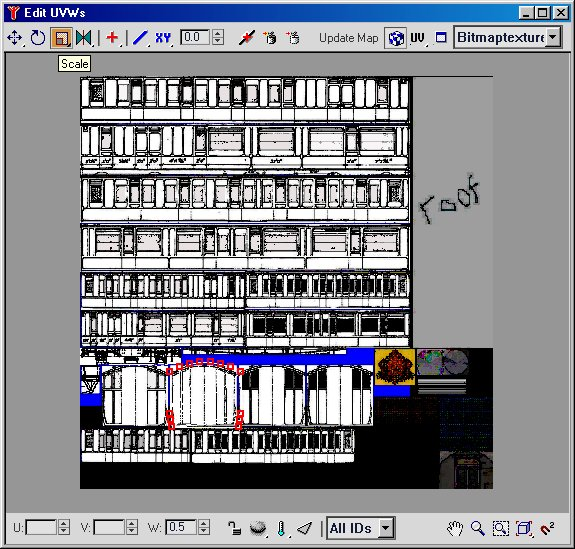
Now we'll specify the windows material. 'New', name it windows, mip level still -3. Open the same .ace file. Change the 'Shader' to 'BlendaTexDiff' & the 'Lighting Palette' to 'OptSpecular25'. This will make sides slightly shiny. If you subsequently change the .ace file press 'Open' again to get a new preview image, nothing else will change.
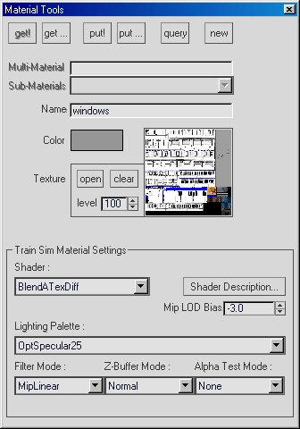
Apply this texture to the outer sides, one side at a time & ensure that the brake is at the same end. Put the texture on the brake end; if you wanted this non-shiny you'll need another texture 'dullwind' with 'OptSpecular0'.
We're now in a position to see our coach in SView, we don't have wheels, bogies or hierarchy but that doesn't matter. I think we ought to see our efforts as soon as possible. Gmax is the easiest of the programs to export - having said that it's the most likely to mangle files. Save often!! Use Keyboard H & select the outside parts, also the roof if you've textured it. Press the 'Link' icon, the 2 boxes on a chain, press H again, or the 'Select by Name' icon to get the 'Select Parent' screen; click on 'main'.Tick the 'Display Subtree'; you should have the parts selected to the right of 'main'.
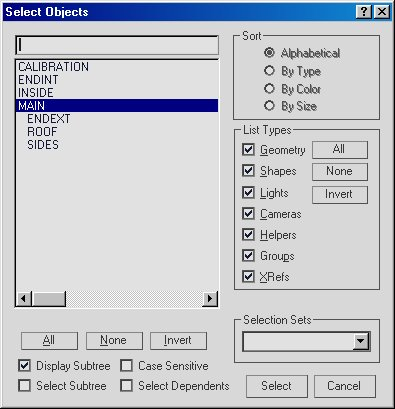
Click, or select, the 'main' part. On the top toolbar press 'Train Simulator' to access the 'LOD Manager' press the + symbol & put in a positive value into the 'LOD Distance'. Gmax defaults to 0 whereas TSM defaults to 2000m. Gmax can be most confusing if you forget to set the LOD distance, in MSTS there'll be a space where you coach should be. Press 'File' then 'Export to .S' browse to the project directory & give the project a sensible name. As Gmax works you'll see a progress bar, with this number of parts it'll flash across. DON'T LEAVE LOD INFORMATION, it'll certainly corrupt the file. Open 'Operations' on the LOD Manager then 'Remove LOD Data from MAX Scene'. Do this every time although it'll much more of a bore later when there will be more information a crash & corrupted file will be much worse.
Gmax sometimes takes it on itself to save a 'recover' file & crash out - just one of its little quirks! If you want to recover one of the 'autobak' files check first in 'Explorer' for the most recent, 'File' 'Open', browse to the backup directory & change to 'all files'. Backup files are autobak*.gx, they cycle 1 - 9. If you reload the recover file & it crashes out again go back to an autosaved backup, whatever you did last was wrong. Of course if you save regularly you have that option.
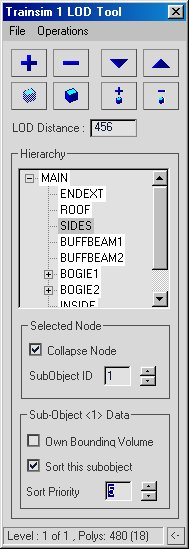
Open Sview & steer to the project - all clever stuff!! Pour yourself a beer.
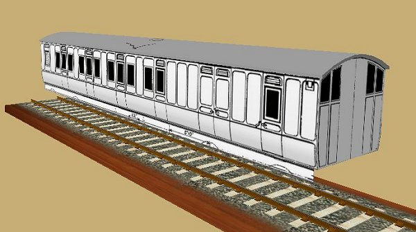